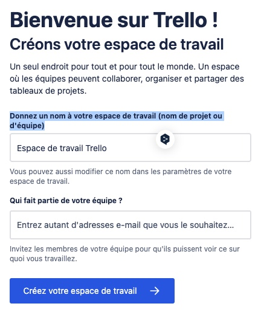
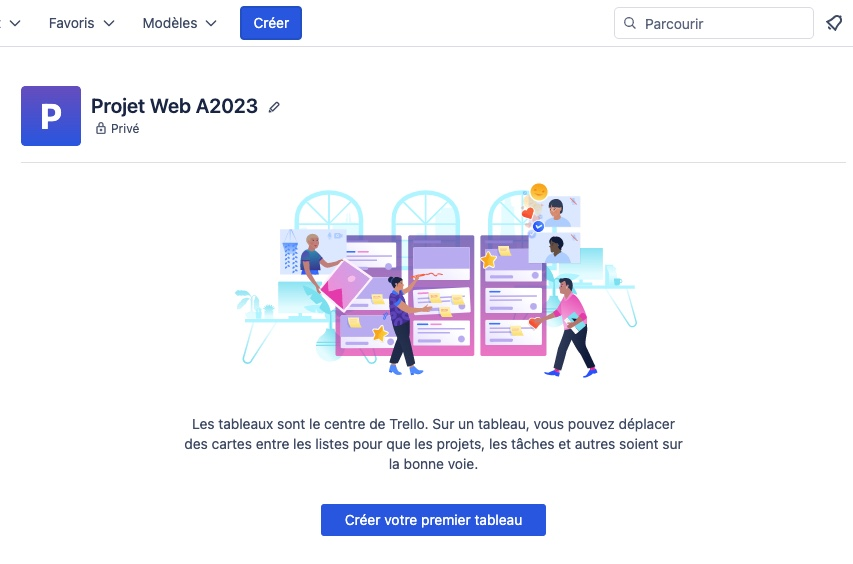
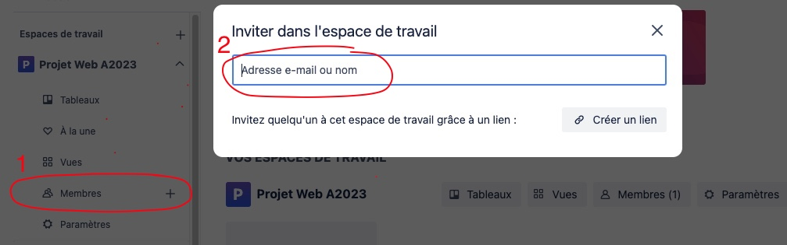
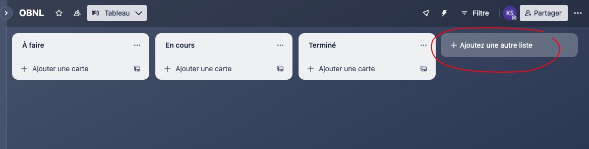
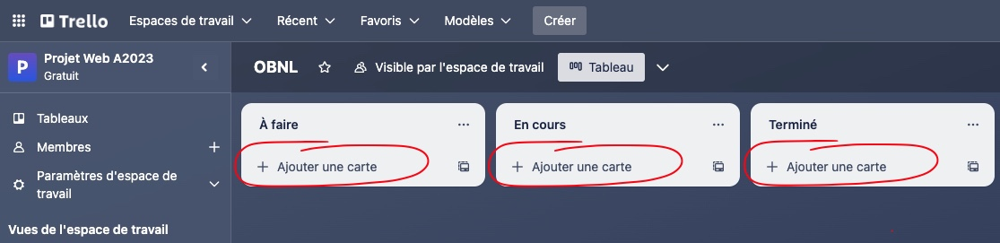

Trello est un outil de gestion permettant de simplifier l'organisation de projets et de définir un ordre de priorité parmi les tâches à accomplir. Il est gratuit.
L'usage de Trello est très répandu. Plusieurs sites d'envergures l'utilisent, notamment:
- Epic Games
- Stack Overflow
- 9Gag
- etc.
Les tableaux donnent une vue d'ensemble sur un projet. En un coup d'oeil, il est possible de voir:
- Qui fait quoi
- Ce qui est accompli
- Ce qu'il reste à faire
- etc.
Il est composé principalement de 3 éléments: un tableau, des listes (colonnes) et des cartes.
Création
Si c'est la première fois que vous l'utilisez, il faut d'abord créer un Espace de travail. Vous devez donc commencer par "Donnez un nom à votre espace de travail (nom de projet ou d'équipe)" et spécifier qui fait partie de votre équipe en les invitant (il doivent préalablement s'être créé un compte Trello pour être visibles).
Pour créer un tableau, repérez dans l'entête le bouton Créer (ou + si votre écran est plus petit), cliquez sur ce bouton et sélectionnez « Créer un tableau ».
Vous pouvez aussi, via la page d'accueil 🏠, cliquer sur le bouton central « Créer votre premier tableau ».
La gestion des membres dans Trello permettent restreindre l'accès de certains tableaux 📊 à certains groupes d'individus. Ainsi, seuls les membres de l'espace de travail pourront consulter et modifier le contenu des tableaux créés dans cet espace spécifique.
Ajout de membres
Pour inviter un membre à votre espace de travail, repérez dans le menu de la colonne de gauche, sous le nom de votre espace, le lien « Membres + ». Cliquez dessus et dans le champs de la modale qui apparait, cherchez la personne par son courriel associé à son Trello ou encore son nom d'usager.
Les listes permettent de grouper les cartes par catégories. Ces catégories peuvent être nommées à la discrétion de chacun afin de refléter l'état actuel des différentes tâches. Cependant, dans le cadre d'un projet numérique, ces noms proviennent généralement d'une méthodologie agile, par exemple: Kanban.
L'idée de base de Kanban est de simplifier la visualisation de l'avancement d'un projet et de limiter le nombre d'éléments En cours. Ainsi, un développeur ne devrait avoir qu'UNE SEULE TÂCHE EN COURS d'assignée, ce qui permet a son équipe de pouvoir identifier qui travail réellement sur quelle tâche et d'identifier si cette dernière stagne.
Création
Pour créer une liste, cliquez sur « Ajouter une autres liste » à droite dans votre tableau.
Les cartes représentent chacune des tâches à réaliser dans un projet. En cliquant, sur celles-ci, il est possible d'accéder au dos de la carte, contenant plus de détails.
- Description
- Date limite
- Checklist
- etc.
Création
Pour créer une carte, cliquez sur « Ajouter une carte » dans la liste désirée.
- Situé à gauche du tableau, le menu permet de naviguer d'un espace de travail à l'autre ou d'un tableau à l'autre, il permet aussi de modifier les paramètres d'un espace de travail ou encore de gérer les membres qui y ont accès.
- En haut à droite, il y a un bouton [...] qui permet d'avoir accès à un menu pour personnaliser l'apparence du tableau, ajouter des champs personnalisés, gérer des automatisation, ajouter des stickers de réaction sur certaines cartes etc.
- Si vous cherchez une carte spécifique, il est possible de le faire par mot-clé dans le champs de recherche tout en haut de la page, vers la droite.

Il existe plusieurs alternatives similaires à Trello. Tout dépendant des besoins d'une entreprise, certaines de ces options seront plus adéquates.